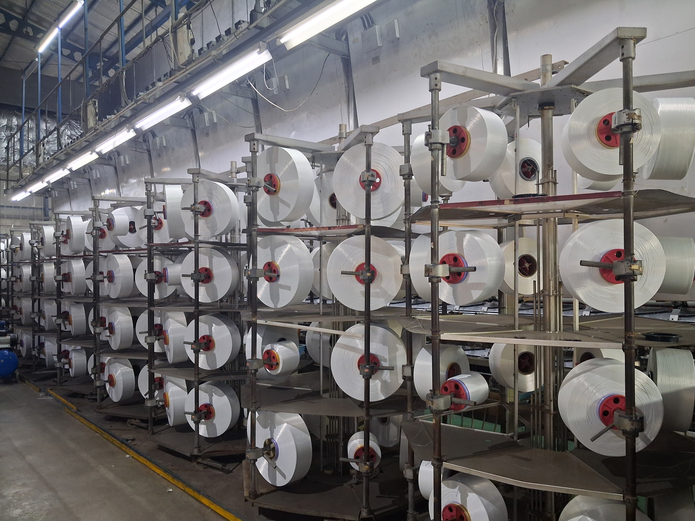
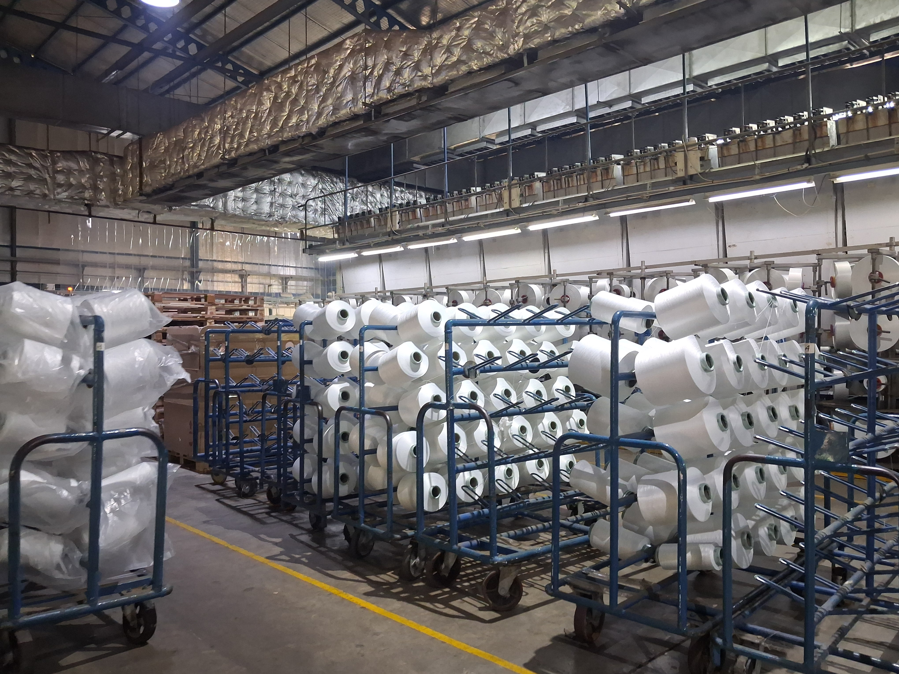
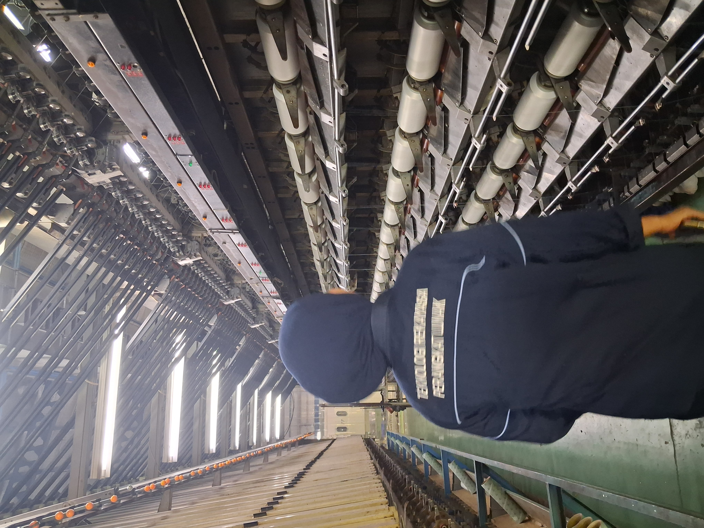
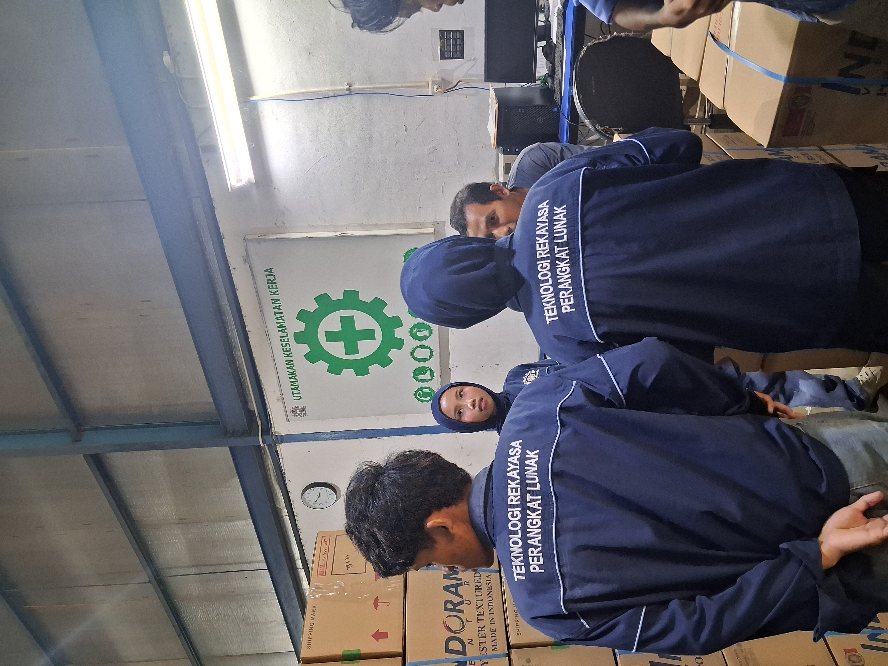

Tujuan Dokumentasi
Dokumentasi ini dibuat untuk memberikan gambaran kepada masyarakat mengenai proses produksi benang DTY di PT Indorama Synthetics serta menjadi bukti kegiatan kunjungan industri yang telah dilakukan.
Ringkasan Dokumentasi
- 📌 Pengamatan proses produksi benang DTY
- 📌 Dokumentasi fasilitas dan mesin produksi
- 📌 Kegiatan kunjungan industri mahasiswa
- 📌 Hasil observasi mengenai kualitas produk
Apa yang Didokumentasikan?
Dokumentasi ini mencakup setiap tahap penting dalam produksi DTY, antara lain:
- Penerimaan bahan baku berupa polyester chips (butiran poliester).
- Proses spinning, yaitu pembentukan serat benang dari bahan baku cair.
- Proses draw texturing untuk menghasilkan benang DTY yang elastis dan bertekstur.
- Pemeriksaan kualitas benang sebelum dipasarkan.
- Tahap pengemasan dan penyimpanan produk.
Tujuan Dokumentasi
Dokumentasi kunjungan industri ini dibuat dengan tujuan:
- Menambah wawasan mengenai industri tekstil.
- Memberikan informasi kepada masyarakat tentang proses pembuatan benang DTY.
- Mendokumentasikan kegiatan kunjungan industri mahasiswa.
- Menjadi media edukasi mengenai teknologi produksi tekstil modern.
Galeri Dokumentasi
Foto-foto hasil kunjungan industri ke area produksi DTY PT Indorama Synthetics.

Tahap Bahan Baku
Dokumentasi bahan baku polyester chips yang digunakan sebagai material utama pembuatan benang DTY.

Proses Texturing
Pengamatan mesin texturing yang berfungsi memberikan tekstur dan elastisitas pada benang DTY.
Kontrol Kualitas
Tahap pemeriksaan kualitas benang untuk memastikan produk memenuhi standar perusahaan.

Kunjungan Industri
Foto kegiatan mahasiswa selama mengikuti kunjungan industri ke PT Indorama Synthetics.

Pengemasan Produk
Tahap akhir sebelum produk DTY disimpan dan didistribusikan kepada pelanggan.

Dokumentasi Kunjungan
Dokumentasi berupa foto dan catatan observasi selama kegiatan kunjungan industri berlangsung.
Manfaat Dokumentasi
Dokumentasi kunjungan industri membantu mahasiswa dan masyarakat memahami secara langsung proses produksi benang DTY, mulai dari bahan baku hingga produk siap digunakan.
- Meningkatkan pemahaman mengenai industri tekstil.
- Memberikan pengalaman belajar berbasis observasi lapangan.
- Menjadi sarana berbagi informasi tentang teknologi produksi benang DTY.
Hasil Kunjungan Industri
Dokumentasi berupa foto, catatan observasi, dan hasil pengamatan selama kunjungan industri digunakan sebagai media pembelajaran untuk memahami proses produksi benang DTY secara lebih nyata.